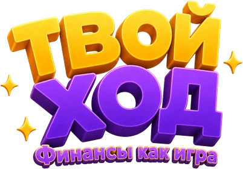

ТВОЯ ИСТОРИЯ
НАЧИНАЕТСЯ ₽
₽
НАЧИНАЕТСЯ
₽ДЕНЬГИ. ВЫБОР. ПОСЛЕДСТВИЯ.Твои решения.
Твои решения.
Твой финансовый опыт.
Получай зарплату, планируй расходы и пробуй разные решения. Разбирайся в финансах через игру — без риска для настоящих денег.
Без регистрации · прогресс сохраняется в этом браузере